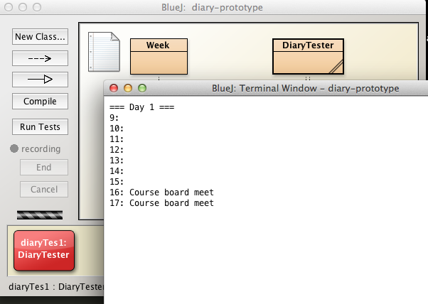
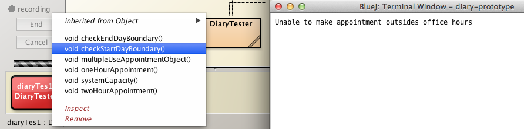

Objectives
We explore the BlueJ diary-prototype project as a prelude to unit and regression testing. In introducing unit tests we examine the role and experiment with both positive and negative tests.
Preparation for Unit Testing
Before launching BlueJ:
- Download an archive of Chapter 6 sample projects provided by BlueJ, available here.
- These projects are in a file named chapter06.zip.
- Save and unzip chapter06.zip into workspaceBlueJ/blueJ/ directory.
- The archive should unzip a folder chapter06 within workspaceBlueJ/blueJ/.
- Recall that your directory structure should be as illustrated in Figure 1.
![Figure 1: Proposed directory structure] (img/0101.png)
Launch BlueJ and open the diary-prototype project located in ../workspaceBlujeJ/blueJ/chapter06 folder(Figure 2).
You should be presented with the BlueJ diary-prototype window similar to that shown in Figure 3.
We are interested in the interfaces of the classes in the project rather than their implementations.
The project comprises three classes:
- Appointment
- Describes purpose of appointment
- Records duration of appointment measured in blocks of 1 hour
- Day
- Day object keeps track of a set of appointments for particular day
- Knows which day of year is being referred to.
- Week
- Has an array of Day objects, typically 5, the default value, representing the working week, but easily changed to 6 or 7.
Although, as stated, for the purose of testing it is only necessary that we understand the interfaces of these classes, nevertheless, you may benefit from studying their implementations also.
You can view the source code in the BlueJ editor by selecting, for example, the Week class diagram in the BlueJ diary-prototype window, right clicking and executing the Open Editor command. See Figure 4.
Exploring class behaviour
Before proceeding with testing it is worthwhile acquiring an understanding of the functionality of the project's components.
Create three Appointment objects on the object bench
- Accept default names
- Fill in actual parameters
- String description : a brief description of the meeting, e.g. "Staff meet"
- int duration : assume all meeting durations 1 hour
See Figure 1.
Create a Day object:
- Fill in actual parameter
- int dayNumber: 1
Add an existing appointment to this day object:
- Select Day object on object workbench
- Right click and from drop-down menu invoke makeAppointment method
- Fill in actual parameters of makeAppointment
- int time: 9
- Appointment appointment: appointm1
See Figures 2 and 3.
In a similar manner make appointments at 1 p.m. and 5 p.m. using the other 2 Appointment objects that we created.
- We are using a 24 hour clock, therefore the argument to enter for for 1 p.m. is 13, and so on.
Observe that if an appointment is successfully made a boolean valued true will be returned by the method makeAppointment (Figure 3).
Display and check the appointments:
- Select the day object
- Right click and invoke showAppointments.
- Verify the information displayed is consistent with what you entered (Figure 4).
Conducting manual testing
From the BlueJ tools menu select Rebuild Package:
- This should clear all objects from the object bench.
Carry out the following tests:
- Double booking
- Check behaviours at boundaries
- Use same Appointment object multiple times same day
- Check system capacity
Double booking
Create a new appointment appointm4 with following state:
- description: "Sales meet"
- duration: 1
Create a new Day object day1.
Invoke makeAppointment on object day1 with parameters
- time: 10
- appointment: appointm4
Invoke makeAppointment again with same parameters, i.e. attempt double booking appointment at 10 a.m.
- The value returned by makeAppointment is false.
- false means double booking has been disallowed (Figure 1).
- The value returned by makeAppointment is false.
Check behaviours at boundaries
Often errors occur at boundaries, for example at the beginning and end of arrays.
In this case boundaries are the beginning and end of the day (9 a.m and 6 p.m.).
Violation of the boundaries would, for example, be an attempt to make an appointment before 9 a.m. or at 6 p.m.
Test these boundaries as follows:
- Remove all objects from the workbench, both day and appointment.
- Create a new Day object on the object workbench.
- Create a new Appointment object appointm1, 1 hour duration.
- Attempt to add the appointment at 8 a.m. to the Day object.
- The attempt will fail: see Figure 2.
Conduct the following further tests:
- Check that an attempt to add the same appointment at 6 p.m will also fail.
- Check that you can add the appointment at 5 p.m.
- Create a 2-hour appointment (appointm2) and attempt to add this at 5 p.m. It should fail.
- Again, remember we are working with a 24 hour clock therefore for 5 p.m. you enter 17.
Use same Appointment object multiple times same day
Check that the same appointment object may be used more than once in the same day. This would be realistic in practice.
- Invoke showAppointments on the Day object (day1).
- Chose 2 available slots, say 10 a.m. and 11.am..
- Add appointm1 to both slots.
- Invoke showAppointments on day1.
- You should see that the test has succeeded as illustrated in Figure 3.
Check system capacity
Fill all remaining slots in the day1 object:
- Check the available slots by studying the output when showAppointments is invoked on day1.
- Add appointm1 to each of the empty slots.
- Show all appointments to verify that all the slots have been filled as illustrated in Figure 4.
- Now invoke the method findSpace on day1 to attempt to fit appointm1 into the day somehow.
- The attempt will fail as illustrated in Figure 5.
- Negative 1 returned by findSpace means the schedule already full so cannot accept appointment.
Positive and negative testing
An interesting discussion on why unit testing is worth the effort is available online here and locally here
Positive Testing
A positive test means we expect the test to return a positive result. For example
- An attempt to make an appointment at 9 a.m. on a day object with a free slot at that time will succeed
- Such a test is illustrated in Figure 1.

Negative testing
- A negative test means that for the test to succeed we expect a negative result. For example:
- Attempting to make an appointment at 8 a.m., which is outside of office hours, should result in failure.
- See Figure 2 for such an example.
- Performing negative tests is often neglected but such tests are important and should not be omitted.
Regression testing
Regression testing
- Comprises running a suite of unit tests to ensure software is working correctly
- Tests which have previously passed, prior to subsequent code changes
- Is recommended practice in software development projects
- To help avoid introduction of bugs into previously working code
A test rig or test harness which drives the set of unit tests is typically employed to automate regression testing.
We will now write a simple application to programatically run the various tests including those we ran earlier.
Here is our list of tests:
Positive testing
- Create three 1 hour appointments.
- add these to the daily schedule at 10, 11, 12 a.m.
- Create one 2 hour appointment.
- Add to daily schedule at 4 p.m.
- Check behaviours at boundaries.
- Multiple use Appointment object same day.
- Only on vacant slots in schedule.
- Check system capacity.
- Fill all remaining schedule slots
Negative testing
Work with new Day object, starting with schedule free of appointments.
- Attempt double booking.
- Two 1 hour appointments a 9 a.m.
- Two 2 hour appointments at 12 a.m.
- Attempt to add 2 hour schedule at 9 a.m. where the 10 a.m. slot already filled.
- Boundary overrun: attempt schedule 2 hour appointment starting 5 p.m.
- Capacity overrun: attempt to create a 10 hour appointment object.
Regression testing suite
Right click in the BlueJ diary-prototype window, invoke New Class and name it DiaryTester (Figure 1).
In the following steps we shall develop these DiaryTest methods:
positive test methods
- oneHourAppointment
- add three 1 hour appointments
- twoHourAppointment
- add one 2 hour appointment
- multipleUseAppointmentObject
- add same 1 hour appointment same day vacant slots
- add same 2 hour appointment same day vacant slots
- systemCapacity
- fill entire day with appointments
- oneHourAppointment
negative test methods
- doubleBooking
- Two 1 hour appointments a 9 a.m.
- Two 2 hour appointments at 12 a.m.
- checkStartDayBoundary
- 2 hour appointment beginning at 8 a.m.
- checkEndDayBoundary
- 2 hour appointment beginning at 5 p.m.
- capacityOverrun
- 10 hour appointment object
- doubleBooking
Regression Testing (positive)
Positive Test Methods
- oneHourAppointment
- twoHourAppointment
- multipleUseAppointmentObject
- systemCapacity
Open DiaryTester in the editor and replace all the auto-generated code with the following class wrapper:
public class DiaryTester
{
}Here is the implementation of oneHourAppointment test.
Add this to the class and verify it compiles withour error.
public void oneHourAppointment()
{
Day day = new Day(1);
Appointment appointm1 = new Appointment("Java lecture", 1);
Appointment appointm2 = new Appointment("Java lab", 1);
Appointment appointm3 = new Appointment("Database lecture", 1);
day.makeAppointment(10, appointm1);
day.makeAppointment(11, appointm2);
day.makeAppointment(12, appointm3);
day.showAppointments();
}Test as follows:
- Create a new DiaryTester on the object bench.
- Invoke oneHourAppointment.
- Verify the appointments displayed on the BlueJ Terminal Window correspond to the programmed values.
- See sample output in Figure 1.
Now implement twoHourAppointment:
public void twoHourAppointment()
{
Day day = new Day(1);
Appointment appointm1 = new Appointment("Course board meet", 2);
day.makeAppointment(16, appointm1);//add at 4 p.m.
day.showAppointments();
}Test as follows:
- Create a new DiaryTester on the object bench.
- Invoke twoHourAppointment.
- Verify the appointments displayed on the BlueJ Terminal Window correspond to the programmed values.
- See sample output in Figure 2.

Next implement multipleUseAppointmentObject:
// Purpose is to demonstrate same appointment object
// may be used more than once.
public void multipleUseAppointmentObject()
{
Day day = new Day(1);
Appointment appointm1 = new Appointment("Course board meet", 1);
day.makeAppointment(15, appointm1);//add appointment at 3 p.m.
day.makeAppointment(16, appointm1);//add same appointment at 4 p.m.
day.showAppointments();
}Test as follows:
- Create a new DiaryTester on the object bench.
- Invoke multipleUseAppointmentObject.
- Verify the appointments displayed on the BlueJ Terminal Window correspond to the programmed values.
- See sample output in Figure 3.
We shall now implement systemCapacity.
public void systemCapacity()
{
Day day = new Day(1);
Appointment appointm1 = new Appointment("Course board meet", 1);
//add the same appointment throughout the entire day
day.makeAppointment(9, appointm1);
day.makeAppointment(10, appointm1);
day.makeAppointment(11, appointm1);
day.makeAppointment(12, appointm1);
day.makeAppointment(13, appointm1);
day.makeAppointment(14, appointm1);
day.makeAppointment(15, appointm1);
day.makeAppointment(16, appointm1);
day.makeAppointment(17, appointm1);
day.showAppointments();
}Test as follows:
- Create a new DiaryTester on the object bench.
- Invoke systemCapacity.
- Verify the appointments displayed on the BlueJ Terminal Window correspond to the programmed values.
- See sample output in Figure 4.
Here is the entire source code for DiaryTester to date:
public class DiaryTester
{
public void oneHourAppointment()
{
Day day = new Day(1);
Appointment appointm1 = new Appointment("Java lecture", 1);
Appointment appointm2 = new Appointment("Java lab", 1);
Appointment appointm3 = new Appointment("Database lecture", 1);
day.makeAppointment(10, appointm1);
day.makeAppointment(11, appointm2);
day.makeAppointment(12, appointm3);
day.showAppointments();
}
public void twoHourAppointment()
{
Day day = new Day(1);
Appointment appointm1 = new Appointment("Course board meet", 2);
day.makeAppointment(16, appointm1);//add at 4 p.m.
day.showAppointments();
}
public void multipleUseAppointmentObject()
{
Day day = new Day(1);
Appointment appointm1 = new Appointment("Course board meet", 2);
day.makeAppointment(16, appointm1);//add at 4 p.m.
day.makeAppointment(15, appointm1);//add same appointment at 5 p.m.
day.showAppointments();
}
public void systemCapacity()
{
Day day = new Day(1);
Appointment appointm1 = new Appointment("Course board meet", 1);
//add the same appointment throughout the entire day
day.makeAppointment(9, appointm1);
day.makeAppointment(10, appointm1);
day.makeAppointment(11, appointm1);
day.makeAppointment(12, appointm1);
day.makeAppointment(13, appointm1);
day.makeAppointment(14, appointm1);
day.makeAppointment(15, appointm1);
day.makeAppointment(16, appointm1);
day.makeAppointment(17, appointm1);
day.showAppointments();
}
}Regression Testing (negative)
Negative Test Methods
- doubleBooking
- checkStartDayBoundary
- checkEndDayBoundary
- capacityOverrun (to be completed as exercise)
We shall now implement these methods.
Implement doubleBooking by
- Creating a day object,
- Creating two 1 hour appointment objects and
- Attempting to assign these appointments to the same slot (10 a.m.) in the day object.
Here is the implementation. Add this to the class and verify it compiles withour error.
public void doubleBooking()
{
Day day = new Day(1);
Appointment appointm1 = new Appointment("Java lecture", 1);
Appointment appointm2 = new Appointment("Java lab", 1);
day.makeAppointment(10, appointm1);
day.makeAppointment(10, appointm2);
day.showAppointments();
}Test as follows:
- Create a new DiaryTester on the object bench.
- Invoke doubleBooking.
- Verify the appointments displayed on the BlueJ Terminal Window show only one assignment at the 10 a.m. slot.
- See sample output in Figure 1.
We shall implement checkStartDayBoundary as follows:
- Create a day object,
- Create a 2 hour appointment object
- Attempt to assign appointment object commencing at 8 a.m.
Here is the implementation. Add this to the class and verify it compiles withour error.
public void checkStartDayBoundary()
{
Day day = new Day(1);
//check start day boundary by attempting 1 hour appointment beginning at 8am
Appointment appointm1 = new Appointment("Course board meet", 2);
boolean status = day.makeAppointment(8, appointm1);
if(status == false)
{
System.out.println("Unable to make appointment outsides office hours");
}
//day.showAppointments();
}Test as follows:
- Create a new DiaryTester on the object bench.
- Invoke checkStartDayBoundary.
- See Figure 2 for response 
Here is the implementation of checkEndDayBoundary:
- Create a day object,
- Create a 2 hour appointment object
- Attempt to assign appointment object commencing at 5 p.m.
public void checkEndDayBoundary() { Day day = new Day(1); //check end day boundary by attempting 2 hour appointment beginning at 5pm Appointment appointm2 = new Appointment("Course board meet", 2); boolean status = day.makeAppointment(17, appointm2); if(status == false) { System.out.println("Unable to make appointment outsides office hours"); } }
Test as follows:
- Create a new DiaryTester on the object bench.
- Invoke checkEndDayBoundary.
- See Figure 3 when checkEndDayBoundary invoked.
- We shall address the reason for such a catastrophic failure (in the legacy code) later.
The actual line of code at which failure occurs when checkEndDayBoundary is invoked is shown in Figure 4.
- We shall shortly:
- Use the debugger to investigate the cause of this error.
- Eliminate the bug that triggered the error.
Regression Testing
Here is the complete DiaryTester class developed so far:
public class DiaryTester
{
//Positive tests
public void oneHourAppointment()
{
Day day = new Day(1);
Appointment appointm1 = new Appointment("Java lecture", 1);
Appointment appointm2 = new Appointment("Java lab", 1);
Appointment appointm3 = new Appointment("Database lecture", 1);
day.makeAppointment(10, appointm1);
day.makeAppointment(11, appointm2);
day.makeAppointment(12, appointm3);
day.showAppointments();
}
public void twoHourAppointment()
{
Day day = new Day(1);
Appointment appointm1 = new Appointment("Course board meet", 2);
day.makeAppointment(16, appointm1);//add at 4 p.m.
day.showAppointments();
}
public void multipleUseAppointmentObject()
{
Day day = new Day(1);
Appointment appointm1 = new Appointment("Course board meet", 2);
day.makeAppointment(16, appointm1);//add at 4 p.m.
day.makeAppointment(15, appointm1);//add same appointment at 5 p.m.
day.showAppointments();
}
public void systemCapacity()
{
Day day = new Day(1);
Appointment appointm1 = new Appointment("Course board meet", 1);
//add the same appointment throughout the entire day
day.makeAppointment(9, appointm1);
day.makeAppointment(10, appointm1);
day.makeAppointment(11, appointm1);
day.makeAppointment(12, appointm1);
day.makeAppointment(13, appointm1);
day.makeAppointment(14, appointm1);
day.makeAppointment(15, appointm1);
day.makeAppointment(16, appointm1);
day.makeAppointment(17, appointm1);
day.showAppointments();
}
//Negative tests
public void doubleBooking()
{
Day day = new Day(1);
Appointment appointm1 = new Appointment("Java lecture", 1);
Appointment appointm2 = new Appointment("Java lab", 1);
day.makeAppointment(10, appointm1);
day.makeAppointment(10, appointm1);
day.showAppointments();
}
public void checkStartDayBoundary()
{
Day day = new Day(1);
//check start day boundary by attempting 2 hour appointment beginning at 8am
Appointment appointm1 = new Appointment("Course board meet", 2);
boolean status = day.makeAppointment(8, appointm1);
if(status == false)
{
System.out.println("Unable to make appointment outsides office hours");
}
//day.showAppointments();
}
public void checkEndDayBoundary()
{
Day day = new Day(1);
//check end day boundary by attempting 2 hour appointment beginning at 5pm
Appointment appointm2 = new Appointment("Course board meet", 2);
boolean status = day.makeAppointment(17, appointm2);
if(status == false)
{
System.out.println("Unable to make appointment outsides office hours");
}
}
public void capacityOverrun()
{
//TODO Exercise
}
}